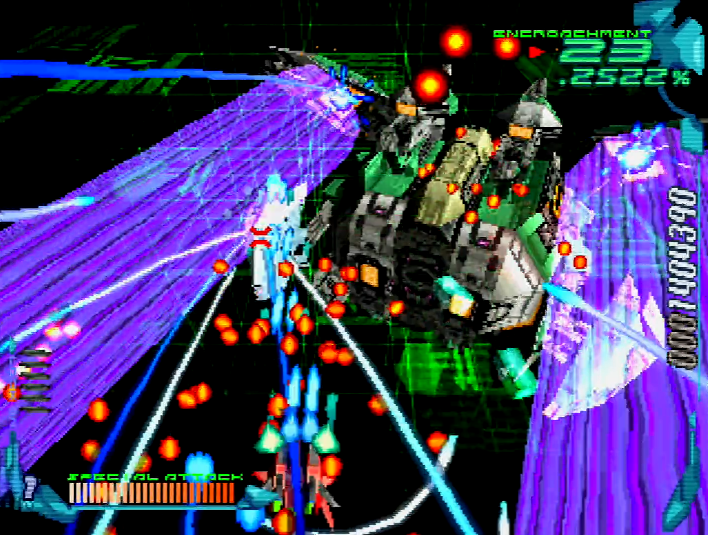
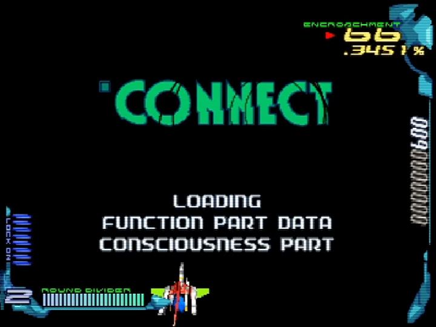
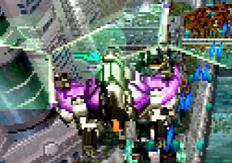

移植版について
「攻略したいけど、基板はハードルが高いなぁ・・・」とお考えの方に、軽くご説明。
PlayStation版
何が違うのか
最初の移植版で、大きな違いは「ボス戦・ステージ移行時のロード処理」です。曲が途切れるため、これをもって「劣化移植」とされる事もあります1。あと、体力リングが無いのは地味にキツいかも。
が、基板を持てば分かります。コレで十分。何故って、基板は死ぬほど扱いにくい。デカいし、デリケートだし・・・適当でも動くコンシューマーの良さが、身に染みて分かります。
実はSem-slutの放射レーザーが青色になっていたり、記憶領域前半が暗い背景だったりと、見やすさに配慮した(とおぼしき)点もあります。単なる劣化移植という訳ではないんですよ。
スペシャルモードとかR-GRAY1/2とか、追加要素が豊富なのも素晴らしいです。ただし1コインクリアはAC版と相互互換4、ある要素がポケットステーション必須といった点もあるので、そこだけご注意を。
ちなみに追加機体、ハイパーレーザーの威力はおそらく同等6だと思われます。ただし爆風の持続が短く、ダメージは瞬間的。スペシャルアタックは、WR系列と異なり着弾型です7。全リングを1発で吹き飛ばすため、infinityには超有利。
遊ぶには
ハードが経年劣化により、減少しているのがネックです。PSは言わずもがな、PS2は映像周りが少し複雑2、PS3はinfinityでガッタガタ3と、一長一短。いっそ、エミュレーターという手もあるかな。
画像は、私の環境でPS版をプレイしたものです5。画質としては基板に匹敵するので、現状いちばんバランスが良いと思います。
小ネタ
- 移植に際してデモプレイを使い回した結果、対処をしくじって被弾するという珍現象が発生しています。よく見ると、M058の弾の撃ち方が異なっていますね。
SIMPLE 1500版
いちおうPlayStation版と同等品なのですが、ちょっと特筆すべき点があります。まず、1面移行時の文章がちょっと変わりました。
そして、大きな変更点がBGM。巷では「『生命の風が吹く場所』『女の子にはセンチメンタルなんて感情はない』が削られた」とされていますが、正しくは「彼女の目的」と「女の子にはセンチメンタルなんて感情はない」です。
正確に言うとデータは存在しますが、0面パートだけです。1面に突入すると、なぜか「彼女の目的」から「ラベンダーの咲く庭」に曲が変わります。「女の子にはセンチメンタルなんて感情はない」は「生命の風が吹く場所」に変わります。
おそらくはレイストームと合わせて1枚に押し込むため、切り詰めてこうなった・・・と思う、のですが・・・相当にエグい仕様です。追加要素も特にありませんし、今あえて買う理由は無いでしょう。
ちなみに、単体版とセーブデータの互換性はありません。「THE ダブルシューティング ~レイクライシス~」として、完全に別のセーブが作られます。
Windows版
PlayStation版を高解像度化しており、非常にキレイです。基板より滑らかかも。
ただし、代償としてゲームスピードが無保証です。高速なPCだと処理落ちゼロです。Pro-torのミサイルが倍近い速さで突っ込んでくるのは、一見の価値アリ。
あと、対応OSは最高でもXPまで。近年のPCだと動いたらラッキーですね。いちおう海外の有志が動作検証しているので、気になる方はどうぞ。
スマートフォン版
AndroidとiOSで配信されており、AC版のシームレスとPC版以上の高解像度をいいとこ取りしています。ダントツにキレイだし、曲もAC仕様9。一見完璧だ。
がしかし、遊びづらい。少なくとも、これまでと同じ感覚で遊ぶのは極めて困難。移動速度は設定できます10が、メリハリ良く動けるとは言えません(指が邪魔)。ロックオンサイトも動くので、ハイパーレーザーが難しい。
あと、何気に以下のようなバグもあります(全てiPhone7)。
- 記憶領域だけ、WR-03の光弾の軌跡が黄色い(本来は青い)
- 領域移動時のボイスが違う(本来より速く、ピッチも高め)11
- グッドエンド時にBGMがループするなど、AC版よりゲームスピードが速い
それでも、独自の評価点もあります12。画質・音質とも高いですし13、操作性もコントローラーを別途調達すれば、おそらく解決できるでしょう14。手軽に雰囲気を味わうと考えれば、選択肢たりえます。
1. 実際、私も基板を買った理由の1つはここだったりします ↩
2. D端子だと720pになるため、ディスプレイによっては映らなくなります。S端子の方が安全かも ↩
3. ただし型番もバージョンも不詳なので、話半分に。PSの公式サイトで見た時は「問題無い」だった記憶。まぁ、ここまで確かめるのもキツいでしょうから・・・ ↩
4. infinityの出現条件が「6コイン以下でdis-Human撃破」になり、1コインノーマルエンドが不可能に。逆に言えば「侵食率99%でinfinity」もできるため、ランク調整の恩恵がさらにデカいです ↩
5. SCPH-70000をD端子→フレームマイスターで出力し、AVT-C878 PLUS(直接録画モード)でキャプチャー ↩
6. Pro-tor(3面)をR-GRAY1で挑んだところ、7ロック×10回＋ボム＋αで形態変化しました ↩
7. いつものタイミングでM44bに撃ったら、ビットが倒せなくて死んだので ↩
8. M05「Lexicon LE1R」 ↩
9. ゲーム音源(PS版含む)とサントラでは、曲のループやフレーズが違います。意識領域の1, 2面が顕著かな ↩
10. 多分、2～3倍速くらいがちょうど良いと思います ↩
11. データ上はこれで正しい(基板のサウンドテストで確認)ですが、ゲーム内で少し遅く/低くしています ↩
12. 一度入れた名前が次から自動で入るとか、特定の領域だけ遊べるとか、オートラウンドディバイダー対応とか。ただ、開始時の侵食率が50%固定では・・・ ↩
13. PS/Windows版は、かなりこもった音なので。ただし、よく聞くとSEはかなりシャリシャリです ↩
14. ちなみに、AC版の隠しコマンドもコントローラー入力なら使えます ↩